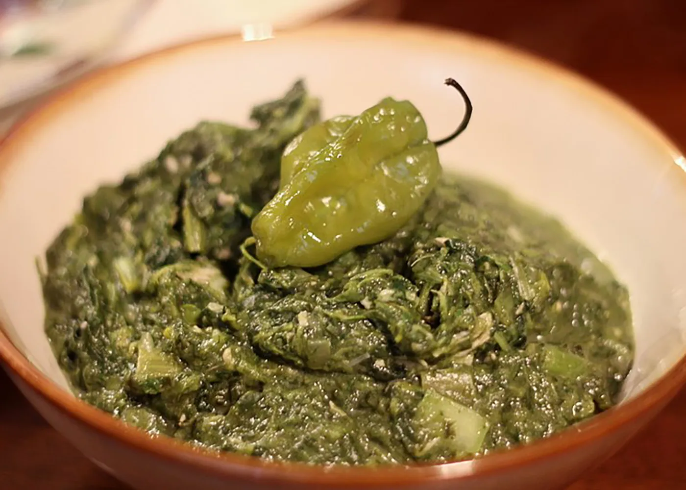
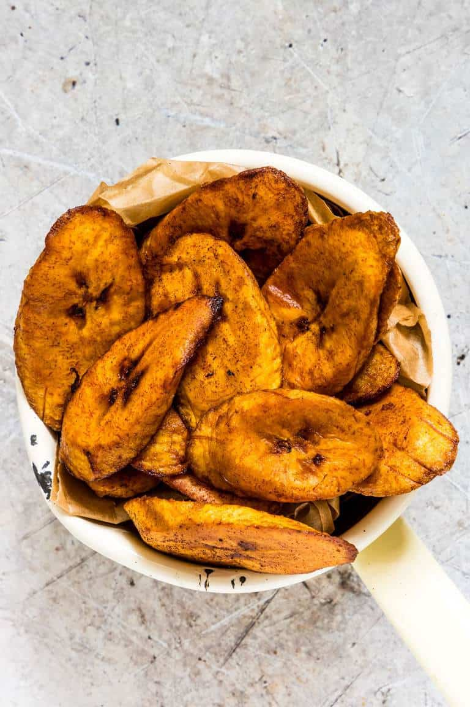
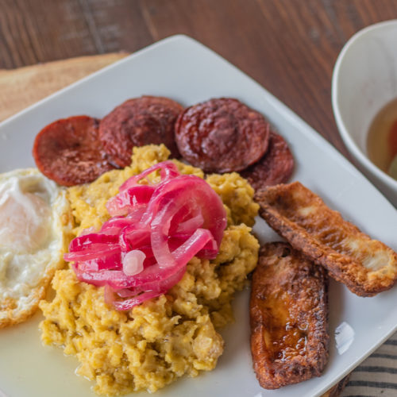

In the Dominican Republic, fresh fish such as tuna, marlin, and ballyhoo are plentiful
A Traditional Dominican breakfast or dinner dish is called mangú, a savory puree made of mashed plantains
In Dominican culture, bananas and plantains are eaten all throughout the year
Callaloo

Ingredients to make Callaloo:
1 pound callaloo leaves or spinach
6 cups chicken stock
1 onion, chopped
½ pound salt beef, fat removed and diced
½ teaspoon ground black pepper
6 tablespoons minced shallots
¼ teaspoon dried thyme
1 green chile pepper, chopped
1 cup okra
½ pound crabmeat
Plantains

Ingredients on how to fry plantains:
Peel and slice plantains, and sprinkle some salt on both sides
Preheat oil in a frying pan or skillet
Add plantain and fry one side of the plantains till golden brown, then turn over using a slotted spoon or turner and fry on the other side.
(The second side will cook much quicker, so keep an eye on your plantains. A ruined plantain is a tragedy.)
Carefully remove plantains from the hot oil using a slotted spoon and drain on kitchen paper
Repeat till all the plantains are cooked and serve your fried plantains warm
Mangu

Ingredients on how to make mangu
plantains
salt
butter
onion
water
vineger
olive oil
Rich, and delicious, mangu is one of my favorite plantain-based recipes. Not only is it very simple to make, it’s also very versatile as you can make it the main dish for either breakfast, lunch, or dinner. Served with quick pickled red onions, this is an easy and nutritious recipe full of potassium, vitamin c, magnesium, and many other benefits that make for a wonderful meal